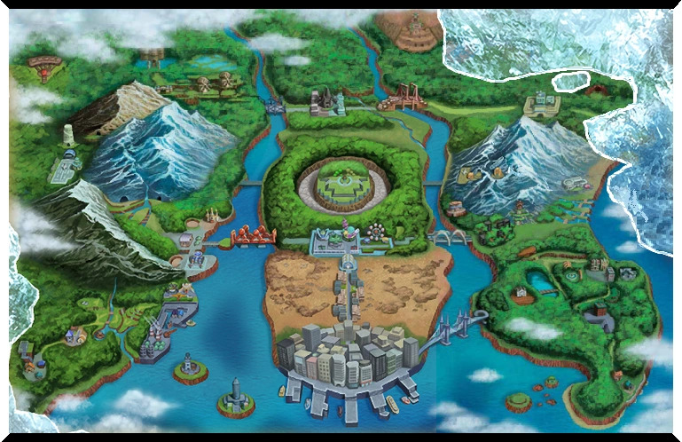

×

Top Pokemon in Kanto is... Charizard! The chart beside displays the base stats of a Charizard.

×

Top Pokemon in Johto is... Umbreon! The chart beside displays the base stats of an Umbreon.

×

Top Pokemon in Hoenn is... Rayquaza! The chart beside displays the base stats of a Rayquaza.

×

Top Pokemon in Sinnoh is... Lucario! The chart beside displays the base stats of a Lucario.

×

Top Pokemon in Unova is... Chandelure! The chart beside displays the base stats of a Chandelure.

×

Top Pokemon in Kalos is... Greninja! The chart beside displays the base stats of a Greninja.

×

Top Pokemon in Kalos is... Mimikyu! The chart beside displays the base stats of a Mimikyu.

×

Top Pokemon in Galar is... Dragapult! The chart beside displays the base stats of a Dragapult.